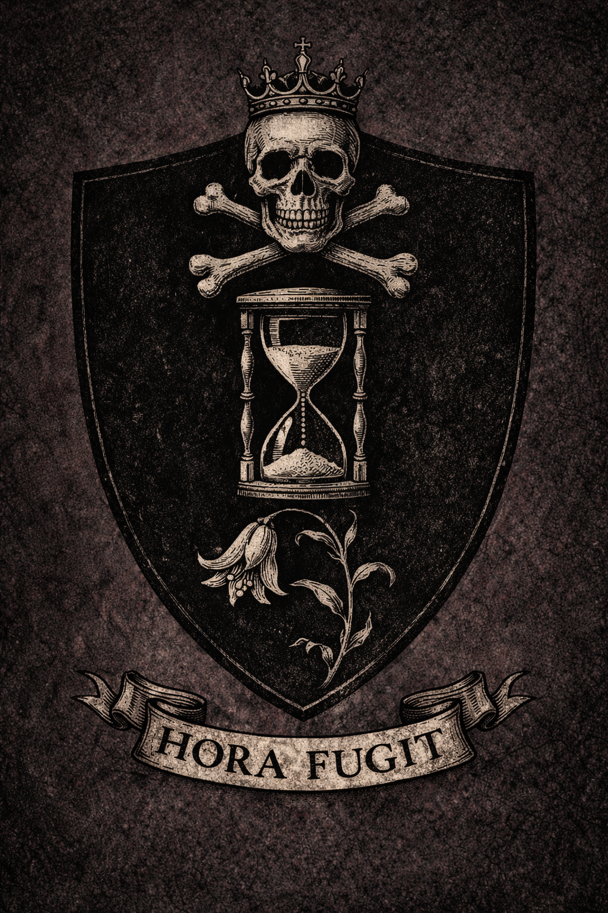

Being a Compilation of Parish Records, Inquest Testimonies, Manorial Rolls, and Sundry Documents
pertaining to the Family of Hale of Halecroft, in the County of Worcestershire
This second volume is where the Hales stop feeling like the aftermath of conquest and begin to feel like a family lodged in weather, work, marriage, plague, and survival. The archive widens here: parish records, rolls, testimony, and memory all begin pressing against one another.
From the Parish Register of St. Wulfstan's, Halecroft — c. 1189
Testimony of Thomas Hale, son of Richard Hale, freeholder, aged thirteen at the time of this proceeding, touching the question of his inheritance of the freehold at Halecroft, Worcestershire.
Thomas Hale saith upon his oath that he is the son of Richard Hale, deceased, who held the said lands in freehold, and that his father was the son of William Hale, also deceased, and that he can recite his descent from William Hale the elder who purchased the said freehold in 1214, which reckoning he hath confirmed by reference to the manorial rolls which he hath examined in the custody of the present lord of the manor, and which confirm the same.
The court hath examined the said Thomas Hale and findeth him to be of the age he claimeth, to have a clear understanding of his father's estate, and to be able to read such Latin as is required to verify the relevant records. This last is attributed to the instruction of Father Edmund Croft, late of St. Wulfstan's, who taught the boy his letters before the pestilence took him.
The court findeth that Thomas Hale is the legitimate heir to the freehold at Halecroft and doth confirm him in his inheritance, the same to be held from the lord of the manor by the terms of the original grant of 1214. The court doth further note that the said Thomas Hale, being a boy of thirteen and now sole survivor of his family, is to be placed under the wardship of his uncle John atte Pond of Pershore until he reaches his majority.
Thomas Hale. His mark. Anno Domini 1351.
Edwardus dei gracia Rex Anglie et Francie et Dominus Hibernie omnibus ad quos presentes litere pervenerint salutem. Sciatis quod nos ad plenam informacionem habere volentes de terris et tenementis que fuerunt Ricardi Hale de Halecroft in comitatu Wigorn', nuper defuncti, & de iure heredum eiusdem Ricardi in terris predictis, mandavimus dilectis & fidelibus nostris Iustitiariis itinerantibus apud Wigorniam quod inquisicionem inde fieri facerent per sacramentum proborum & legalium hominum de comitatu predicto.
Qui quidem Iusticiarii inquisicionem inde fecerunt & per eam compertum est quod predictus Ricardus Hale tenuit predictum manerium de Halecroft in comitatu Wigorn' in feodo simplici tempore mortis sue, & quod Thomas Hale filius & heres predicti Ricardi est etatis tredecim annorum & ultra, & quod predictum manerium valet per annum ultra reprisas quinque solidos & quatuor denarios.
Et quia invenimus & per inquisicionem predictam compertum est quod dictus Thomas Hale est verus heres predicti Ricardi patris sui secundum legem & consuetudinem Anglie, ipse idem Thomas legitime successit in hereditatem predictam. Concessimus igitur & confirmavimus eidem Thome & heredibus suis terras predictas in Halecroft tenendas de nobis & heredibus nostris per servicium debitum & consuetum.
In cuius rei testimonium has literas nostras patentes fieri fecimus. Teste Rege apud Westmonasterium, vicesimo die Novembris, anno regni nostri vicesimo quinto.
Edward, by the grace of God King of England and France and Lord of Ireland, to all to whom these present letters shall come, greeting. Know that we, wishing to have full information concerning the lands and tenements which were of Richard Hale of Halecroft in the county of Worcester, lately deceased, and concerning the right of the heirs of the said Richard in the said lands, we have commanded our beloved and faithful Justices itinerant at Worcester that they cause an inquisition to be made thereof by the oath of honest and lawful men of the aforesaid county.
Which Justices have duly made an inquisition thereof, and by it it is found that the aforesaid Richard Hale held the aforesaid manor of Halecroft in the county of Worcester in fee simple at the time of his death, and that Thomas Hale, son and heir of the aforesaid Richard, is of the age of thirteen years and upward, and that the aforesaid manor is worth annually beyond outgoings five shillings and four pence.
And because we find, and it is found by the aforesaid inquisition, that the said Thomas Hale is the true heir of the aforesaid Richard his father according to the law and custom of England, the same Thomas has lawfully succeeded to the aforesaid inheritance. We have therefore granted and confirmed to the same Thomas and his heirs the aforesaid lands in Halecroft, to be held of us and our heirs by due and accustomed service.
In testimony whereof we have caused these our letters patent to be made. Witness the King at Westminster, the twentieth day of November, in the twenty-fifth year of our reign.
The Testimony of Hugh the Miller, of Halecroft · Being of Sound Mind · Sworn on the Gospels
I am Hugh son of Walter, miller, of the vill of Halecroft in the county of Worcester, and I have known the Hale family this thirty years. Richard Hale that is dead was my near neighbour and I would say he was a good man and a fair one. He paid his dues at the appointed times and I never heard it said otherwise. He kept his hedges and his ditches in good repair, which is more than some do. When my wife was ill in the winter of the year six before the pestilence came, he sent meal to the house and would take nothing for it.
His son Thomas I know also. I was in the village when the pestilence came and I saw the boy come back from Pershore in the spring with nothing but a pot and his own two feet. He went straight to the house and then to the field and he worked it. He was eleven years old. I do not know what else to say. If the justices want to know whether Thomas Hale should hold the land after his father, I say yes. He has been holding it already.
His mark · ✕ · Hugh son of Walter, Miller · witnessed by Robert the clerk
The Testimony of Agnes, Widow of Edmund Farre, of Halecroft · Sworn on the Gospels
I am Agnes that was wife to Edmund Farre that died in the pestilence in October of the year forty-eight. I knew Richard Hale and Maud his wife from the year of my marriage. Maud Hale was a good woman and a skilful one, and she kept her household well and taught her children how to work. I was with her at the end. She died on a Thursday. She asked me to make sure Thomas was not alone when she went, and I promised her I would, but I was not able to keep that promise because I was ill myself by that time. I am sorry for it still.
Thomas Hale is the son of his parents and he has shown himself to be so. He should hold the land. His mother would have wished it and I believe his father would have too. I do not know what more I can say to the justices. I am a widow now and I have my own land to manage, but I will say what I know and what I saw.
Her mark · ✕ · Agnes widow of Edmund Farre · witnessed by Robert the clerk
The Testimony of Brother Anselm, Formerly of Worcester Priory · Residing at Halecroft · Sworn on the Gospels
I am Anselm, a brother of the order of Saint Benedict, formerly of the priory at Worcester, now resident at the church of Saint Wulfstan's at Halecroft at the invitation of the vicar there who is himself reduced in health by the pestilence and requires assistance. I came to Halecroft in the spring of the year forty-nine when most of the dying was done.
I found one man holding the farm. He was a boy of eleven years. He had ploughed two of the four fields himself, or tried to, the ploughing being imperfect but the intention clear. He had arranged the burials himself or caused them to be arranged when he could not do so alone. He had made a record of the names in a small book which I believe he had taken from his father's desk. The record is imperfect — the boy could not spell all the names and some entries are only a letter or a mark — but every person in that village who died is in that book. I have seen it. I helped him correct some of the spellings.
I do not know the law of England. I know what I saw. Thomas Hale held the land of Halecroft through the winter of forty-nine and the year fifty and the year fifty-one, and he is holding it now. If the justices have a question as to whether he is competent and willing to hold it, I would suggest that question is already answered.
Anselm, O.S.B. · witnessed by Robert the clerk · Worcester, Michaelmas 1351
A Remembrance, Written by Thomas Hale of Halecroft to His Son John — Anno Domini 1382
To my son John who shall hold this land after me —
I sette down this remembrance in the yere of our Lorde thirteen hundred foure score and twayne, being the yere in which Thomas Hale of the Hale in the countie of Worcester, freeholder, doth write to his son that which he hathe learned from living and from watching others die.
I was eleven yeres in the yere the pestilence came to this village. My father Richard Hale was four-and-fourtie yeres, and he died in November of that yere, together with my mother Maud and my brother Edmund that was eighteen. My father's brother William that was sixe-and-twentie died in that same weeke with his wife Alice and their daughter Joan. I know not whether Joan had a name day before she died. I think not.
I came home from Pershore where I had gone to my mother's kin before the pestilence came thither also. I came home in the spring and the house was emptie and there were graves in the churchyard and no one to tell me how many. I was eleven yeres old and I had a cooking pot that my uncle had given me and I did not know what else to do, so I went to see to the pig.
This is what I have to tell my son. When thou dost not know what else to do: see to the pig. The world will be confusing and the people thou hast loved will be gone and thou wilt not know what is required of thee. See to the pig. The pig doth not require thee to understand anything. It requireth thee to do the next thing. Do the next thing and then the thing after that, and in this manner the days will pass, and thou wilt still be here when they are done passing, and the land will still be here, and that is enough.
We are a familie that holds what it is given. Keep asking whether thou hast done enough. A familie that keeps asking will keep the land. A familie that stoppeth asking will lose it, sooner or later, one way or another.
Keep asking. Keep the land. See to the pig. 🐷
Thomas Hale of the Hale, to his Aunt Elspeth of Pershore
Middle English · Written in the summer of 1350 · Thomas being approximately twelve years of age · The earliest surviving document in his hand
Dere Auntie Elspeth, I do wryte to thanke you for kepinge me these monthes and for the bred you dide give me the morning I dide goe and also for not creyinge until I was past the gate, which I dide notise and which I think was kinde.
I am home now. The howse is stondinge and the beestes are well and Brother Anselm from the priorie was here and he tolde me what happenede and then he wente back and it is just me now and the beestes and old Matilda who keepes the bees and who dide bringe me a pot of honney yesterday without sayinge anythinge which is her manner.
I do have a question which is: mother dide have two cookinge pottes. I haue the one I brough from you. I cannot finde the other one, which was the smaller one with the cracke in the handele that she used for the porridge in the morning. I do not need it for cookinge as I have the one. I just want to knowe where it is.
Also I want to knowe if you kept any of her other thinges when she sente me to you. She sente me with my clothes and the potte and nothing else but I thought perhaps she sente some thinges separatelie which you have still.
I am well. Brother Anselm taught me to make a pasty before he wente which I have made twice and it is tolerablie good the seconde time.
Your lovinge nevew Thomas Hale. God save you. Written at Halecroft this summer.
Single Page Found Inside a Worcester Priory Psalter
Bodleian MS. Lat. liturg. d.42 · Identified by Eleanor Voss, January 2024 · Unsigned
Thomas Hale of the Hale was at the march on the castle on the fourteenth of June in this year of Our Lord 1381. He rode from Halecroft before dawn and was in Worcester by the hour of prime and he marched with the men from the parishes and he carried a billhook which was what he had, being a farming man.
He did not use the billhook. He stood in the street with the other men for two hours and watched the castle gates and listened to the shouting from inside and then he put the billhook on the ground and walked back toward the south gate and went home. He was back at the Hale before vespers. He told no one and no one has named him to the sheriff.
He is a man of forty-three years who survived the pestilence when he was eleven and who has held the Hale by the labour of his hands without assistance from any lord or court since he was confirmed in his inheritance. He did not burn anything. He did not break anything. He stood in a street with a billhook for two hours.
He should not be named to the sheriff. He will not be named to the sheriff. This is set down so that the truth is somewhere, which is what the truth requires.
— Unsigned. Worcester, the month following the march, 1381.
An oak box, approximately 30cm × 20cm × 15cm, with a wrought-iron lock and hasp. The wood is very dark with age, almost black in the grain. The lid has a visible crack along the front edge, repaired with a strip of leather binding that is itself old. The lock plate is worn bright at the keyhole from centuries of use.
Inside, visible through the open lid: a layer of documents tied with faded ribbon. The 1214 freehold purchase. The 1067 writ. The court rolls. Four centuries of paper proving what the family held and how they held it. A small brass key still on its ring, placed deliberately on top of the stack.
When George Edward Hale catalogued the box in 1858 after Augusta's death, he reached into it and felt something under the lining on the left side — a slight stiffness, as if something had been folded there. He cut the lining with a small knife.
What he found was a small folded piece of parchment, fragile, brown, the ink faded to the edge of legibility. He spent two hours reading it letter by letter with a magnifying glass. He copied it out in full and placed the original back under the lining and repaired the tear.